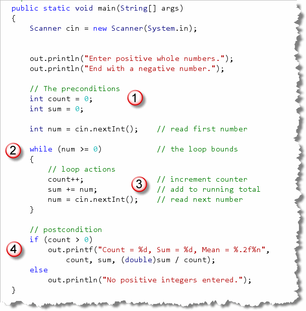

Often you'll need to
write loops that monitor events, rather than loops
that use a simple counter to control their execution. To
accomplish this, you'll usually use the while loop.
Although the for loop is the undisputed champ
in the counted-loop arena, the while loop really comes
into its own when the loop test condition is a little less clear-cut.
Let's look at an example.
Here's a condensed fragment of code from an applet named
Indefinite.java that uses a simple "event-testing" loop
similar to the one shown here. Take a look at this loop, and see
if you can guess how many times it will execute.

In the Indefinite program, the character
variable, randomChar, is assigned a value between 0
and 127, calculated by using the Math.random()
method. In the loop that follows, randomChar
is tested, and, if it is not equal to the character 'Q',
then the loop body is entered, where the number of repetitions
is incremented and displayed.
After you've looked it over,
run the applet by clicking the link in this sentence.
When the applet appears, press its
Start button, and see if you were right! When you press the button, the
Indefinite applet will execute the loop as shown here.
 Unless you have some kind of psychic powers,
you can't know how many times the loop will run.
That's why this kind of loop is called
an indefinite loop. You can't tell by reading the source
code how many repetitions it will make.
Unless you have some kind of psychic powers,
you can't know how many times the loop will run.
That's why this kind of loop is called
an indefinite loop. You can't tell by reading the source
code how many repetitions it will make.
Even though this is not a counted loop, the body
of the loop must still contain code that advances the
loop's bound. If it does not, then, once entered, the loop will
repeat forever. In this example, we advance toward the loop's
bound by calculating a new random character for
randomChar.
Sentinel Bounds
This particular indefinite loop is an example of a sentinel loop. A sentinel loop is a loop that looks through its input for some special value to end the loop. The special value is called the sentinel. Sentinel loops are commonly used in two situations:
- When searching through text to find a character or word.
- When used with an "out-of-bounds" value that marks the end of input.
In this example, the sentinel is the letter 'Q', generated by the random number generator, and it is used to mark the end of valid input.
Another Sentinel Example
A sentinel doesn't necessarily have to be a single value, like
the letter "Q" in the example just shown; it may include a range of values.
When we wrote GradeCalculator in the last chapter, we had to
know ahead of time how many grades the teacher would enter, so
we could use the for loop.
With the while
loop, though, we can allow for any non-positive number to act as a
sentinel to end the input. To illustrate, let's write
a program that does this:
Calculate a Positive Mean
Accept integer numbers from the user until a negative number is entered.
Display the sum, count and average of the numbers entered.
Rather than just reading ahead, see if you can apply what you learned in the Writing Loops section, to create a loop plan that meets these requirements.
Here are the questions you should ask yourself:
- What is the loop's bounds?
- What are the necessary bounds preconditions?
- What are the necessary actions to advance toward the bounds?
- What is the goal?
- What are the goal preconditions?
- What actions are necessary in the body to carry out the goal?
- What postcondition actions are necessary to carry out the goal?
When you're done, come on back here and we'll tackle it together.
1. What is the loop's bounds?
The loop's bound is that a negative number was entered. The Java loop condition should look like this:
while (num >= 0)
2. What are the bounds preconditions?
The only precondition is that num holds a
value. The value could come from reading a network stream,
could be entered from the keyboard, or could be generated by
a random number generator. The only hard-and-fast requirement
is that num must be initialized in such a way
that it is possible to either enter or to avoid the loop.
Here's some code that meets those requirements.
System.out.print("Enter next number: ");
int num = cin.nextInt();
3. What advances the loop?
Inside the loop body, the value of num
must change. To do that, you
could generate another random number, input a value from the
network stream, or, as we've done here, read another number from the keyboard.
At this point, you should be able to test the mechanics of your loop, and make sure that it "works." Once the loop works, you can turn your attention to the loop's goal.
4. What is the goal?
The loop's goal is simple. It should display the count of the non-negative integers entered, the sum of the integers, and their average.
5. What are the goal preconditions?
To meet the goal, you must have a counter, and a variable that
can hold the sum. The counter should be an int, but
the sum can be an int or a double.
6. What actions advance the goal?
Each positive number should be added to the sum of the numbers. Then, the count should be incremented for each number entered.
7. What postconditions must be considered?
You must first check for a count of zero. If count is zero then no numbers were entered and you can't compute the average or sum.
If count is greater than zero, then compute and display the sum, average, and count of numbers entered.
The Solution in Code
You'll find a solution, PositiveMean.java, in the
code folder for this chapter. This program follows this strategy to
calculate the average of a sequence of numbers input from
the keyboard.

Open the program in DrJava and you'll notice that:- The precondition section sets up both the
counter and accumulators, as well as reading in the initial
value from the user. Before you encounter the loop test,
you must make sure that the tested value (
numin this case) has a legitimate value. - Rather than checking a counter or looking for a single
value, the loop bounds is controlled by a more general Boolean
condition. The loop will continue while
numis greater than, or equal to 0. - Inside the loop body, the three loop operations take place: the current count is incremented, the current number is added to the running total, and the next number is generated to advance the loop. Remember, if we didn't read a new number, then we'd be stuck inside an endless loop!
- Finally, after the loop is finished, the count value is checked in the loop's postcondition to make sure it's "safe" to calculate the average. If no positive numbers were entered, an error message is displayed instead.
You should run the program on your own computer. Here are
two different runs on my machine:


Sentinel Loops Summary
- An indefinite loop monitors some condition other than the state of a counter as its loop bounds.
- A sentinel loop examines each value in input looking for a value which indicates the end of the loop. The sentinel may be a single value or a range of values.